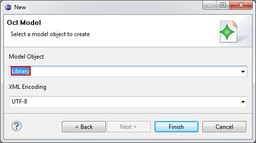

First you need to create a model file. Therefore open the Creation Wizard by right clicking on your Workspace, select "New" then "Other" or use Hotkey CTRL + N. Following screen should appear. Select the OCL Model.

Figure: Create Model File
To manage multiple ocl constraints it is necessary to declare the "Library" Object as root element. In further releases this step might not be performed anymore.

Figure: Select Model Object
After creating an OCL Library File it is possible to add your individual ocl constraints to the library. Later on, these constraints can be deleted and modified as well. To add a constraint open the model file and add a constraint by right clicking on the library root element.

Figure: Insert OCL Constraint
To modify an OCL constraint it is necessary to open the properties view (Select Menu "Window" then "Show View").

Figure: Edit OCL Constraint